This page serves as a learning tool to assist in understanding a single perceptron unit and its applications, outside of multilayered nueral networks, with C++ and Python. Multilayered neural networks are the talk of the town. However, let's not get ahead of ourselves. Instead, let's start with a discussion of the units within the network, perceptrons. Once the perceptron is understood, a neural network can follow.
This page is not meant to be an exhaustive source of perceptron knowledge. It is meant to be breif and straight to the point. Additionally, this page may serve as a breif introductory comparison between C++ and Python.
Let's describe a perceptron by a function f. The mathematical model for a typical perceptron is a simple step function (1), where τ is called the threshold. The function can be rewritten so that the inequalities are set to zero (2). In this configuration, the threshold τ is often referred to as the bias b, where b = -τ. This is also called a boolean function, because its output can only be either 1 or 0, which corresponds to true or false. A graph of the step function is shown to the right. It's no coincidence that it looks like a step.
|
 |